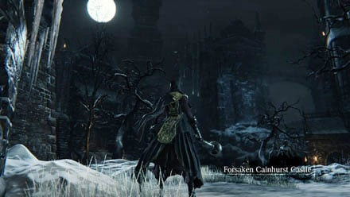
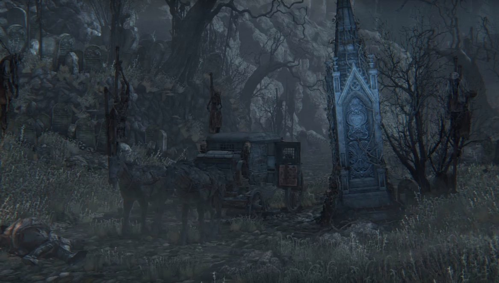
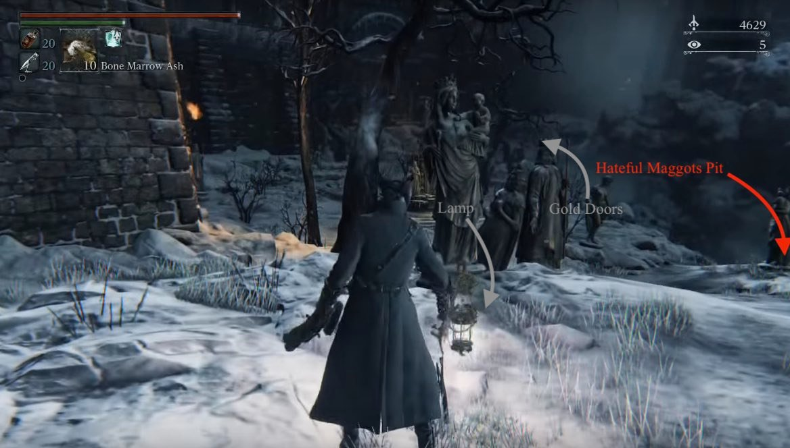
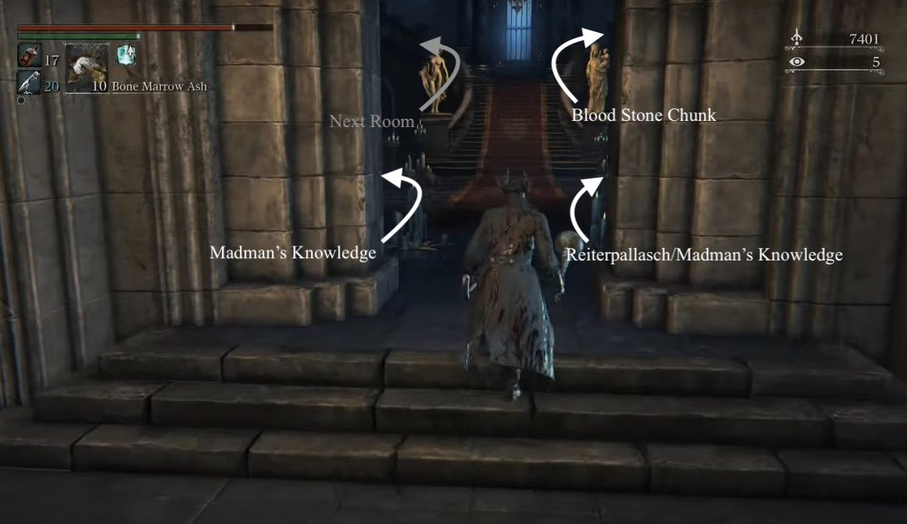
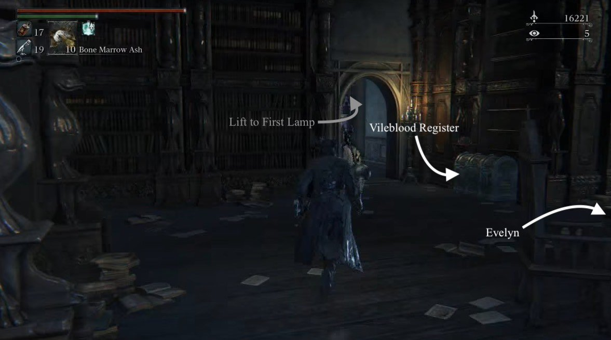
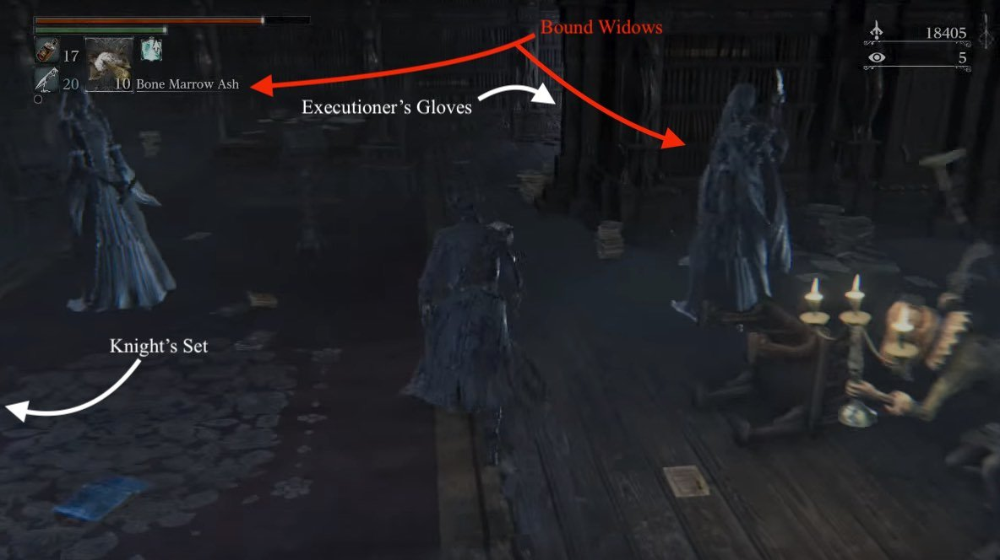
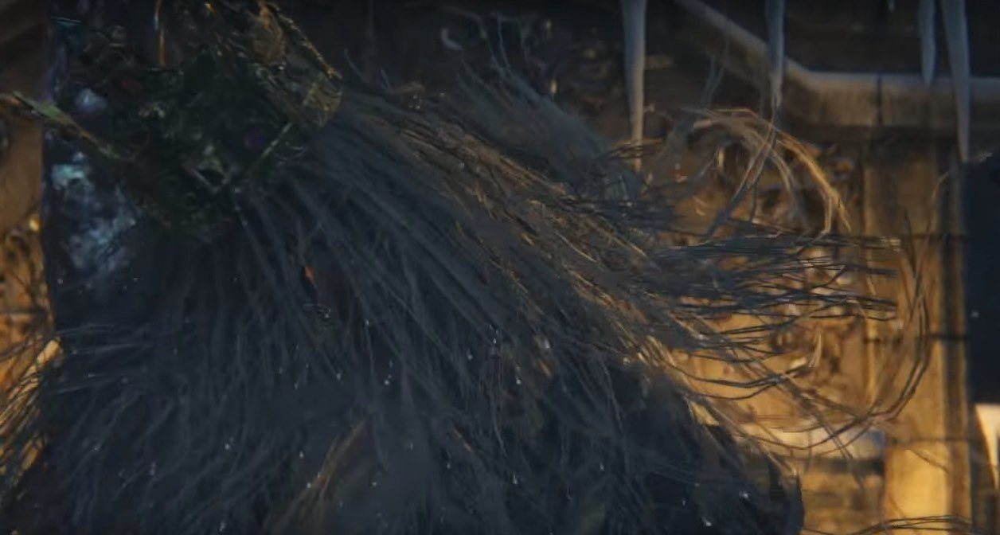

Forsaken Castle Cainhurst is a location in Bloodborne. Cainhurst is the home castle of old nobles, once actively interacting with Yharnam, most notably as enemies of the Healing Church. They were bound by their bloodlines and by-the-book when it comes to their traditions, before being exterminated by the Executioners, and therefore ending their trades with Yharnam. Now just a cold ruin, Cainhurst has forever lost its road to return home to Yharnam. Only a lake with a deep mist, and dark ominous valleys as far as the eye could see.
General Information

- Previous: Iosefka's Clinic,
- Next: Byrgenwerth
- Suggested Level: 60 to 80
- Suggested Upgrade: +7 to +9
- Bosses: 1
- Lamps: 3
- Insight: Find Martyr Logarius (+1), Defeat Martyr Logarius (+3)
Cainhurst Castle Map
NPCs in the area
- Annalise, Queen of the Vilebloods - Cainhurst Vilebloods Covenant.
- Alfred - Only if you give him the Unopened Summons item, that is found after the boss fight against Martyr Logarius.
Bosses
Items
Weapons
Consumables
- Madman's Knowledge x2
- Frenzied Coldblood x3
- Kin Coldblood x2
- Numbing Mist x10
- Quicksilver Bullets x10
- Blood Stone Chunk x4
Specials
- Crown of Illusions - On the Ground after the Martyr Logarius boss fight, straight after the entrance to the area.
- Noble Dress
- Vileblood Register
- Bold Hunter's Mark
- Executioner Set
- Knight's Set
- Knight's Wig
- Unopened Summons
Enemies
- Bloodsucking Beast
- Silver Lady
- Gargoyle
- Cainhurst Servant
- Hateful Maggot
- Scurrying Beast(Wandering Madness)
Lore Notes
- It is implied that Queen Annelise and her Cainhurst Knights could have been Vampires, as the ritual of initiation for their covenant is drinking her blood and the Knights vied for the boon of tasting her blood.
- The Cainhurst Vilebloods were in active conflict with the Healing Church, until they were exterminated by the Executioners. Their conflict began when the Cainhurst nobility acquired something called Vile Blood, that subsequently tainted the castle and the inhabiting nobles, probably turning them into vampires or something similar. They received the Blood from a traitorous student of Byrgenwerth, but consequently began hunting for more Blood amongst the ranks of the Healing Church.
- Martyr Logarius chose to stay behind in Castle Cainhurst after the Vilebloods were eradicated, since their Queen could not be killed, having consumed enough blood to become immortal. He donned the Crown of Illusions, to forever hide Annelise from the world.
- Arianna is wearing a Cainhurst noble dress, hinting at her lineage and forbidden blood.
- Interestingly there are no male ghosts to be found in Castle Cainhurst, and only the female nobles seem to have turned into ghosts.
- Cainhurst Castle is by far the most remote location in Bloodborne. It is so far removed that the Blood Moon that hangs over Yharnam is not visible in the Castle, removing it from the sphere of influence the Great Ones have over Yharnam.
- Queen Annelise states that she and the Player are the only two Vilebloods left, raising the question who or what the Bloody Crow of Cainhurst is.
- Maria of the Astral Tower could be another descendant of the Undead Queen or the Vilebloods. Her armor set is reminiscient of the Cainhurst Noble set and she seems to be partially immortal, as well as being proficient at blood magic.
Trivia
- In the area where you first meet the gargoyle, if you take the raised path to the right and look over the parapet to the landscape beyond there is a lake. In the lake there is an island formation that is a scale model of the island from "Kingsfield", From Software's first game.
- If you don't loot any bodies inside the castle entrance, the ghosts in that room will not become visible or hostile.
- Cainhurst has several parallels with the Painted World of Ariamis from Dark Souls. Both are snow covered castles that are situated on an island (Cainhurst surrounded by water, Painted World located surrounded by low valleys), both require that you pick up an item located in the room that you start the game in, the bosses in both areas use a scythe and are humanoids of about equal height, and both wear white clothing.
Cainhurst Castle Walkthrough
Prerequisites to Entry:
- Defeat Vicar Amelia and examine the skull on the altar to change the world state to Night.
- Enter the Forbidden Woods to access the back of Iosefka's Clinic. Once there, be sure to open the gate that leads to the front of the clinic.
- Enter the clinic and obtain the Cainhurst Summons.
- Go to Hemwick Charnel Lane and defeat Witch of Hemwick.
- Approach the tall stone obelisk in the area with the two Executioners.
Prerequisites Met
To access the Castle, warp to the Witch's Abode lamp and head back towards the large open area. You may want clear this area of Graveyard Hags, Executioners and Tainted Dogs entirely as if you die before heading to Cainhurst, you won't be able to summon the carriage again, however if you're confident in your ability to avoid death, make a beeline for the tall stone obelisk in the area holding the two executioners. This is because you'll need to use your Cainhurst Summons before approaching the area, and you are limited to 1. This will trigger a cutscene of a horse drawn carriage arriving. Once it ends, get in the carriage to trigger another cinematic to travel to Cainhurst Castle.

Upon arrival, you'll find yourself on a bridge over a moat, with the castle directly in front of you. Your only option is to head forward. As you do, the massive portcullis will raise and you'll find the first area lamp. Light it and now you can die in peace.
Exploring the Outdoors
We're heading forward to the right, straight through both doorways, turn right to walk along the side of the mountain to pick up a Frenzied Coldblood(9) then drop down the rocks nearby, into a pit of Hateful Maggots to pick up a Tempering Blood Gemstone(3). You want to ensure you aren't swarmed by them so collect the item and run out of there, once you're in a bit more space, feel free to take them on or continue with your journey.

You'll want ignore the structure we just dropped from for the time being, and head towards the left towards the large gold doors into the castle proper. As you get closer, you'll encounter three pairs of Bloodsucking Beasts. Fighting these two at a time is very difficult as they're very fast, have an incredible reach and can do a pounce attack that can stun lock you. Divide and conquer plus the use of bolt damage, for the most effective results. Don't forget to pick up the 2x Numbing Mist on the way, as well as the 4x Numbing Mist, Frenzied Coldblood(9), and Frenzied Coldblood(8) on the triangulated corpses to the left of the big gold doors. On the right of the doors, find another 4x Numbing Mist.
Into the Castle
When you reach the large doors they'll open by themselves and you'll find yourself in the grand reception area of the castle. There are bodies with items littered around and you'll be able to hear the sound of a woman crying. If you want to, you can pick up the items, but this will cause mobs of Bound Widows to appear and be aggressive. They're not hard enemies to deal with, but in large groups you'll have issues. There's a Madman's Knowledge on the left, next to a pillar. On the far right corner of the room, find a chest containing the Reiterpallasch, and another Madman's Knowledge not too far off. Kneeling on the floor there should be an Indentured Chevalier. Kill him before he gets up, then head up the stairs and to the right only briefly to secure a Blood Stone Chunk before heading up the left stars. You'll find another Chevalier on the landing in a similar position to kill him quickly too.

NOTE: An alternative to facing these enemies here, can be to just not, it is as easy to get swarmed as it is easy enough to run past most of them.
In the next room you'll encounter more Widows, but more importantly, you'll also find a corpse with 4x Quicksilver Bullets. You will probably have to fight these Widows dude to the spacing of this room so be prepared. Clear the room out and make sure to pick up the Noble Dress from the chest on the right side of the room. Head out, onto the balcony, and ascend the stairs onto the castle walls where you'll encounter your first Gargoyle on a round battlement. These enemies aren't very hard but have relatively high HP. Avoid getting grabbed by them, and a good combo should do the trick as they're easily stunlocked. Once the first one is dead, turn around and head up the steps onto a little tower. Kill the second one up here and pick up the Blood Stone Chunk. Carry on down the path across the walls and past another couple of Gargoyles until you reach the indoors once again. You'll find another Chevalier before you reach another exit. Once you're back outside, you'll only do so momentarily but before you proceed forward, take a right where there are a collection of statues and deal with the two Gargoyles at the end of the path so you can pick up the Executioner Set then back track and proceed into the library.
The Library
The first thing you want to do in the Library is sprint past any enemies and head to the left into a small room. This is the shortcut back down to the first lamp so you want to trigger this. Return back up and prepare yourself for another big fight. There are several groups of Bound Widows in this area, but most importantly you want to kill the Indentured Chevalier at the far end of the room. He has a blow dart which causes all of the Widows in the area to become twice as aggressive if he hits you -which can be identified by the red mark on your back. Once you've killed the him and cleared out all of the Widows, head back to the shortcut lift and open the chest next to it to get the Vileblood Register. There's another chest closer to the stairs that contains the Evelyn. As you approach the stairs, it will be against the right-hand wall behind some tables. Carry on with the level by heading up the stairs.

Up the stairs you have several Chevaliers to deal with. Some appear in pairs but mostly you should be able to clear this area out with relative ease. There's lots of loot in this area so be sure to clear out the enemies and head to the left corner -across the small bridge- of the room to pick up a Blood Stone Shard. Once you're done in the room, look over to the window on the far right and you'll find one with pane of glass missing. Head through it and you'll be be on a small statue. Carefully drop down to the next ledge, picking up the 6x Quicksilver Bullets off the body, then drop down to the bottom where Gargoyles will greet you.
Head through the door back into the library and you'll be met by several mobs of slightly more aggressive Bound Widows, including several that don't hold daggers, but instead hold their own heads and scream at you. The scream can stunlock you, so be sure to kill them first as getting stun locked leaves you very vulnerable. There is also a Chevalier hiding to the right of the entrance to the room, so prioritize killing him before the Widows as he will also use blow darts to aggro them. In this room there are two chests, one of which contains one of the strongest arcane spells in the game, Executioner's Gloves, while the other contains the Knight's Set. Once you've cleared the room out, you're done in here so head back out of the door onto the balcony.

Head back out the same way you came into the room and proceed left to find a gap in the wall with a ledge. Carefully head down the ledge and onto the small roof where you can find a Kin Coldblood(10), but beware the Gargoyle perched against the wall above the item. Head back onto the ledge and hop into the open window and you'll appear in a blocked off part of the Library. Pull the lever and you'll open up the ladder to the end of the level and create a convenient shortcut back to where you picked up the Evelyn. Climb the ladder and explore the upper section. There are no enemies up here so enjoy the brief moment of peace. Straight to your left, you'll find yet another chest, this time holding a Warm Blood Gemstone(3). If you head round the side of the room you'll find a Wandering Madness who holds 2x Blood Stone Chunk so do your best to catch him.
Getting to the Martyr
Once you're ready to move on, head up the stairs out of this area to the roof. You'll spot an item guarded by a lone Gargoyle. When you engage it, two more will fly in so be fast and damage them as fast as possible. Pick up the Knight's Wig then head the only way you can... off the side of the roof. Don't worry, you can only come off one edge of the roof, so drop off the side and land a few feet down, then look to the circular turret roof; drop off it and onto the thin fenced walkway (NOTE: If you've missed something and would like to go and claim it, you can do so by dropping onto the stairs on the right, but as soon as you drop off the roof, onto this walkway, there is no returning to Cainhurst.). Head a long here until you find a gap in the fence, drop out here onto another circular roof. Carefully walk around the edge until you get to a bridge you can drop down to. Pick up the Kin Coldblood from the body then climb the ladder. On the next roof, if you head over to the far side and pick up the Bold Hunter's Mark. Head up the roof and through the archway to take on the boss of Cainhurst Castle.

BOSS FIGHT: Martyr Logarius.
Calm After the Storm
Once you have defeated Logarius, pick up the Crown Of Illusions he drops and put it on. Head towards where his throne stood and a cutscene will trigger, causing a previously hidden chamber to appear. Go in the building and up the stairs into Annalise, Queen of the Vilebloods' chamber. She will talk to you as soon as you enter the room, telling you to kneel before her. Walk forwards to just before her and look to the right, here is the Unopened Summons which you need to give to Alfred to finish his storyline (though if you want to join the Cainhurst Vilebloods don't give the summons to Alfred as he will kill Annalise [though if he does, you can take part of her remains to the upper cathedral to have her resurrected. In the event you resurrect her, she will return here automatically]).
Kneel before the queen and decide if you want to join the covenant or not. Once you're done, turn around and there'll be another Lamp, allowing you to return to the Hunter's Dream.
Cainhurst Castle Map
 Anonymous
AnonymousCainhurst looks more like DLC material included in the main game, unrelated to the rest.
- Anonymous
Prepare to hear sobbing for at least 10 minutes straight if you don't kill all the ghosts
- Anonymous
What is that red rune looking thing that you get inside that castle, what I mean is when you are you the castle some of the monsters may summon a red thing on the back of your head. What is that and what does it do?
- Anonymous
This Area would have been Perfect, Then they Dumped Screaming Ghosts everywhere Instead of putting Actual Enemies (and yeah, the Cainservent's, the Gargoyles, but those guys Pale in numbers compared to the MOTHER FLIPPING GHOSTS)
- Anonymous
Being a vampire has certain limitations, but it can also be a ton of fun. Your extra strengths and abilities can make you successful in almost every endeavor you participate in and before you know it the money and acquaintances will come streaming in. You can build wealth and gain prestige and notoriety and attempt things you may never have even considered as a human. One thing you will definitely have more of is time. Beef up your education and learn all you ever wanted to. Traveling the world to see things most people only ever see on TV is going to be especially fun if you turn to share your life with one of us. Let us show you the wonders of the world. Learn new languages, go skydiving or scuba dive with sharks, visit the African safari. You no longer need to be scared of nature or wildlife you will have become the world's strongest predator. Have fun with it and your life as a vampire can be more fulfilling than you ever dreamed. Explore, experiment, experience and get excited. There’s a big world out there with lots to see and do and as a vampire, you can do it all, if willing and ever ready to be a full blooded vampire with powers and mighty great skills then these is the opportunity for you to get transformed and turned into a vampire, contact the mighty Hindu priest and also he is a vampire lord, find him on his email and lay your request and heart wishes to him, trust me you will find him on: vampirelordenrichment@gmail.com ..........
- Anonymous
Probably in the minority here, but Cainhurst was one of my least favorite areas. For an area this late in the game, most enemy designs here aren't as intimidating as the stuff in Byrgenworth or Old Yharnam. So many rooms are gauntlets of those stunning, shreiking, tanky lunatic women. And the number of cheap traps those gargoyles laid for me. Good lord...
- Anonymous
This page states that Cainhurst is so far away from other locations that the blood moon doesn’t show up there but it also doesn’t show in old Yharnam either so it’s nothing to do with distance.
- Anonymous
By the way the lantern doesn't show up right in the middle of the red carpet its kind of off to the left side of the room by some statues close to the red carpet but after you talk to the wueen and turn around then its on the right.
- Anonymous
Another thing to consider: if you call the carriage while fighting (get too close to the obelisk) and, after the cutscene you DODGE to avoid the enemies, the carriage disappears. BUT - it wont be gone forever, just reload the area, and you'll find it right there, waiting near the obelisk. Got me angry for a minute, thought that for a stupid dodge i missed it in that playthrough.
- Anonymous
The carriage will also despawn if you accidentally hit it while being attacked
- Anonymous
Hotel transylvania live action remake looks pretty depressing huh
- Anonymous
For my skill bloodtinge I obtained the summons before entering hemwick so I could go straight for cainhurst, I reached the stone and edge walked towards it to be dramatic and cool and then I find out it doesn’t even activate until the witches are defeated... what an anticlimax
- Anonymous
- Anonymous
I don't have the option to kneel before the queen. She just says "We shall not give audience to such an ill mannered beast. Get thee gone" What have I done wrong?
- Anonymous
My favourite location :)) Just the same as Irithyl of the Boreal Valley , Frozen Eleum Loyce , Painted World of Ariamis :)
- Anonymous
You forgot to mention something...if you attack the horses the carriage disapears and you can't summon it again
- Anonymous
This place is very reminiscent of Dracula's Castle from both the novel and Castlevania, the arrival to it and the invitation as well as the maidens attacking you are right out of the book, while the fact that monsters attack you and some of the enemies (particularly Logarius) feel like a direct reference/inspiration to Castlevania. Someone needs to put that into the Trivia section, because overall this place only has one thing in common with the painted world, and it's the fact it's isolated and snowy. Literally everything else is a reference to Dracula and Castlevania
- Anonymous
It says here that Castle Cainhurst is so far removed from Yharnam that you cannot see the blood moon, and therefore Cainhurst is not under the influence of the great ones. But if you stand still and listen inside the castle, you can just hear the baby Mergo crying, like when the blood moon arrived.
- Anonymous
- Anonymous
"(NOTE: If you've missed something and would like to go and claim it, you can do so by dropping onto the stairs on the right, but as soon as you drop off the roof, onto this walkway, there is no returning to Cainhurst.)."
What is this talking about? Since when can't I leave an area and come back? Is this more fake bullshit people keep putting in the wiki or can someone intelligent actually explain this?
Why does the short description say there are 3 lamps in the area? AFAIK there are only 2: the starting one and the post-boss one. Am I missing something?
- Anonymous
How did this castle of badass nobles lose against those Executioner skrublords, I'd like to know?!
- Anonymous
- Anonymous
Kin coldblood on the map is located on the other end it's on the wrong ride of the map
- Anonymous
The architecture here is super awesome, and the bookcases and frescoes were a nice touch. From is really awesome at making locations like this, and seeing the shimmering lake afar is AWESOME from the rooftop. This area does have one of the harder bosses in it though, but it's not that bad because he's pretty fun to fight. And the reward for killing him is a crown that reveals magical unicorns, rainbows and flying dinosaurs. Canonity 101 ladies and gentlemen.
- Anonymous
- Anonymous
I'd kill for From to do an entire Borne/Souls game set in a place like this. Like, imagine the Resident Evil mansion but cranked up to 11. There's an insane amount of potential. Easily my favorite location in the game.
- Anonymous
I like the idea that the Cainhurst nobles might've been vampires (hence they're called Vilebloods) but I've been under the impression this whole time that most of enemies you come across the game, some of the NPCs, and the player character yourself, are vampires (without them ever using the word). Perhaps it's best to say the Cainhurst nobles were ghouls or revenants, creatures notorious for feeding on the blood of other vampires.
- Anonymous
What happened to the king of Cainhurst? There's blood on the chair next to Annalise that goes the middle of the room. Maybe executed by Logarius?
I noticed 2 instances where the information in the map conflicts with that in the walkthrough, and in both cases it's the map that's correct: 1. The walkthrough omits any mention of the Warm Blood Gemstone, which can be found in a chest after revealing & climbing the secret ladder in the library; and 2. the item on the roof before the boss, across from where you climb up the ladder, is in fact 2 x Bold Hunter's Mark. (If you think about it, this makes sense because once a player drops down onto the last narrow rooftop there is no way to go back to the rest of the area. Without a Bold Hunter's Mark, players would be forced to either fight the boss or lose all their echoes via the regular Hunter's Mark.)
Lastly, where the map says there's a Frenzied Coldblood (the one farthest to the right on the map), I got a Kin Coldblood (10), and this item isn't mentioned in the walkthrough either. When you're on the narrow ledge that goes past the open window you drop in to access the secret area in the library, don't go in at first. Instead, keep following the ledge to a narrow rooftop that leads to a body with the item. A gargoyle waits above and drops down when you approach. Once this is done, you can go back to the window and proceed as indicated.
I'd add this info myself, but I only just registered and want to familiarize myself with how everything works first.
- Anonymous
I *****ed my game up xD
I'm currently in forbidden woods (Wiki recommends level 40), haven't even visited the Shadows (Found the entrance to the fight tho) and I'm level 67. I killed the Witches of Hemwick in the first try, they didn't even damage me. I'm so used to grinding that I ruined the game's challenge with overlevelling.
- Anonymous
note walkthrough has a madman's knowledge where the map says there is a tempering blood gemstone. Seems that the map is correct
- Anonymous
Bloodborne is the best Castlevania game we've had in years.
There's a little mistake on the placement of executioner gauntlets. Here says that gauntlets are separate of the rest of its set, on the same room of Kight's attire. That's wrong.
Executioner set is complete (garb, gauntlets and trousers) just behind that two gargoyles. The one found at the same room of Knight's set is Executioner's Gloves, this is not an armor piece, it's a hunter special tool, the spells-like in this game.
- Anonymous
I went to Cainhurst, fought the king and what not and activated the lamp and went to the hunters dream. Figured I should stock up and be prepared for what's possibly next, but now I can't even get back there. Any help?
- Anonymous
Was attacked in the dining area despite not looting anything. So it's just the entry way that is docile until you loot something.
I died to something in the castle and I cannot figure out what killed me. Do I need a certain amount of insight to see the enemies
- Anonymous
It says "with letter in your inventory". Where can I find it?
- Anonymous
No hostilities (besides crawlers) and the dead bribes didn't spawn until I looted something. Could anybody research this on a new game?
- Anonymous
- Anonymous
The cutscene does not trigger for me even though I have killed the witch and have the summons, any advice?
Just a callout to JudasBlitzkrieg for the effort that went into adding walkthrough text to this and other areas. Thank you for thinking of everyone and helping out those who cannot access youtube or rely on text for whatever reason. Let this comment be the thank you so many will think and not type! <3
- Anonymous
Horrible advice to go for the mob at the end of the room first. It's wy easier to take out the first few brides one by one, and if it notices you then go to kill it.
- Anonymous
Changed the loot/ghosts bullet point in the trivia section to reflect the results of testing. Once you go into the dining room, any ghost outside of the great hall entrance are immediately hostile regardless of if you have looted any corpses. The treasure chest in the back-right corner of the hall does not anger the ghosts, but pillaging the corpses in the hall does.
- Anonymous
i've pulled the lever to acces the third floor but i am lost now Where am i supposed to go now? There is just an item and one of the bloodshard lizzard.
- Anonymous
- Anonymous
If the player attacks the carriage/horses in Hemwick Charnel Lane, it will fade and disappear, but upon refreshing the level, the horses and carriage will return with the same cutscene as normal.
- Anonymous
Anybody else think that this fellow looked like Gwyn, Lord of Cinder? Also, Stage two, he gets out a sword that looks a great deal like the Soulbrandt. I didn't notice that until he jammed it into the ground for one of his attacks.
A snowy optional area that can only be accessed by collecting a strange item found back at the exact beginning of the game... Nope, never heard of that one before.
- Anonymous
1. DO NOT kill Logarius if you haven't lit the initial lamp There is no way to return to the cainhurst lamp from Logarius's seat, so your character can never explore the level again. If you do not light the logarius lamp after killing Logarius (and jump off of the roof to return to the initial lamp), you will respawn in Hemwick and permanently lose all access to BOTH cainhurst AND the vileblood castle. 2. The Hemwick monument will not resummon the horses if you die in combat after the horse cutscene has triggered. This means that you will never be able to access the castle in your game even if you have the procured the cainhurst summons. BE VERY CAREFUL WHEN INTERACTINF WITH ANYTHING CAINHURST
- Anonymous
- Anonymous
i was wondering if anyone else has noticed this. when i go down into the area where those big bellied beasts are walking around, and into the little canyon area with all of the worms, i begin to hear eerie music, that almost immediately stops playing when i walk just a short ways away from the canyon. is there a reason for this?
- Anonymous
What happens if I die in the cainhurst castle? Where will I respawn and will i never be able to go back?
- Anonymous
All the knights on the horsestatues are missing their right leg. Not sure if it has something to say lorewise...but wanted to mention it^^
So, after a tedious hit-and-run of the enemies here, I've gotten a science down on how much exactly the WHOLE of Cainhurst Castle gives. Keep in mind I used a Tier 1 Moon Rune (10% more Echoes) so I don't have the default echoes.
In total, 70,215 Echoes (not exact) can be achieved by running this whole area with Tier 1 Moon rune, by killing all 7 Bloodlickers (17,787 Echoes), 11 Maggots (2,541 Echoes), 46 Bound Widows (24,794 Echoes), 10 Dart Shooting Indentured Servants (6,160 Echoes), 6 Rapier wielding Indentured Servants (6,006 Echoes), 12 Gargoyles (12,012 Echoes), and the one Red-eyed Gargoyle (915 Echoes).
Remember, I had the Tier 1 Moon rune, so it's not the default runeless amount. I might update this post once I math all that out again without the rune, I might.
Welcome.
- Anonymous
You can also find a tempering blood gemstone and a warm blood gemstone in this level. Someone ought to add this info on the article))))
- Anonymous
The trivia is wrong, Logarius the bastard wears dark clothing in my game.
- Anonymous
Well, after killing Logarius I went to the dream to resupply and repair and stuff, and sold the crown. Only now I've read that if you put it on a WHOLE ***** AREA will open for you. How the he'll was I supposed to know that? So, now have I lost access to it entirely?
- Anonymous
This area reminds me a lot of Castlevania, especially the Vampire Castle in Lords of Shadow. Even the gargoyle are somewhat similar to the lowly beastly vampire! Not saying they are referencing it though. Also, the Snowy gate at the start reminds me a lot of Castle Dracula in the Van Helsing movie! :o

{kind=link}
I think the spirit are only females because are inspired on Banshee, a female Spirit of revenge from the Celtic mithology
0
+10
-1